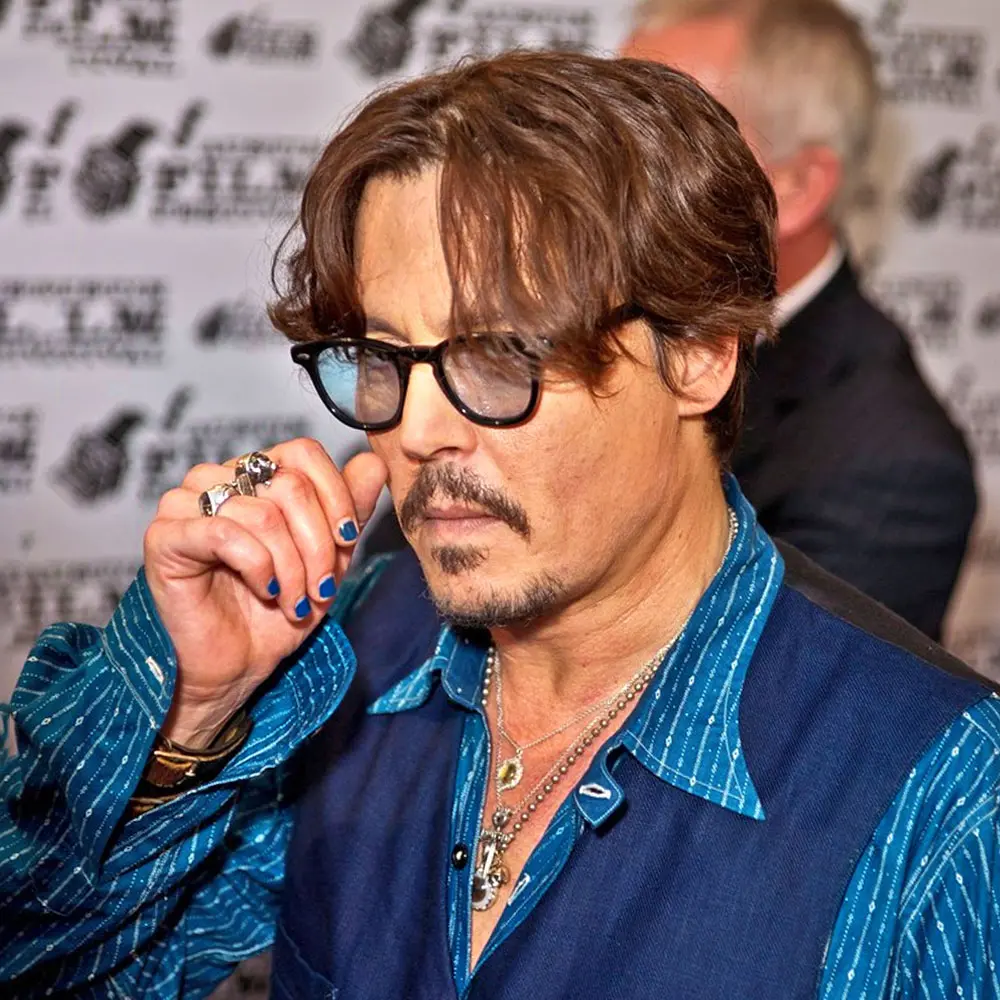
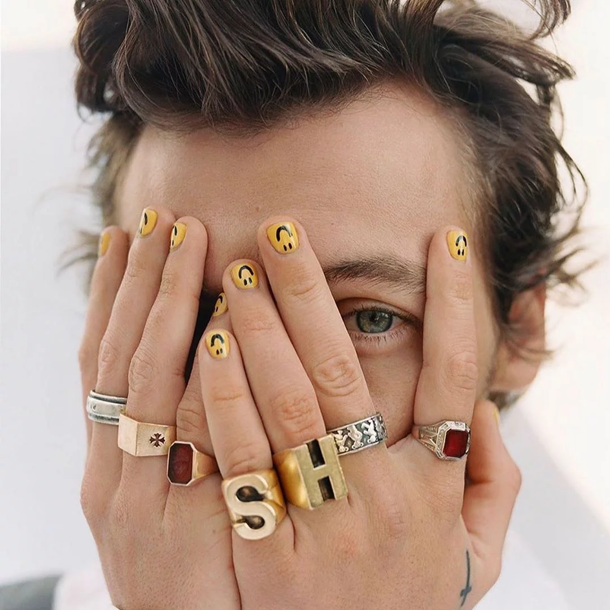

Men and nail polish:
Throughout history men have painted thier nails for a variety of reasons.
Way back in 3200 B.C. warriors in Babylonia would have their nails manicured and colored before going to battle. Kohl was used to color the nail, and the color may have signified
the warriors class.
In 3000 B.C. China, it was said that the chinese used nail color to show rank and dynasty. Ingredients like beeswax, Arabic gum and egg whites were used for nail color, along with pigmented dyes for colors like red.
Jumping to 1957, Frederick Slack broke his nail at work and repaired it using aluminum foil and dental acrylic. He created a fake nail that looked realistic, this was the start of the acrylic nail
During the punk revolution several punk male artists such as Maryln Manson and David Bowie wore makeup and nail polish as a statement.
As society continued to progress male celebrities, like Johnny Depp wore nail polish for a variety of reasons like making a statement, supporting a cause, or personal preference. Now more male singers, such as Harry Styles and Lil Nas X
are seen wearing nail polish and/or owning their own nail polish brand.


